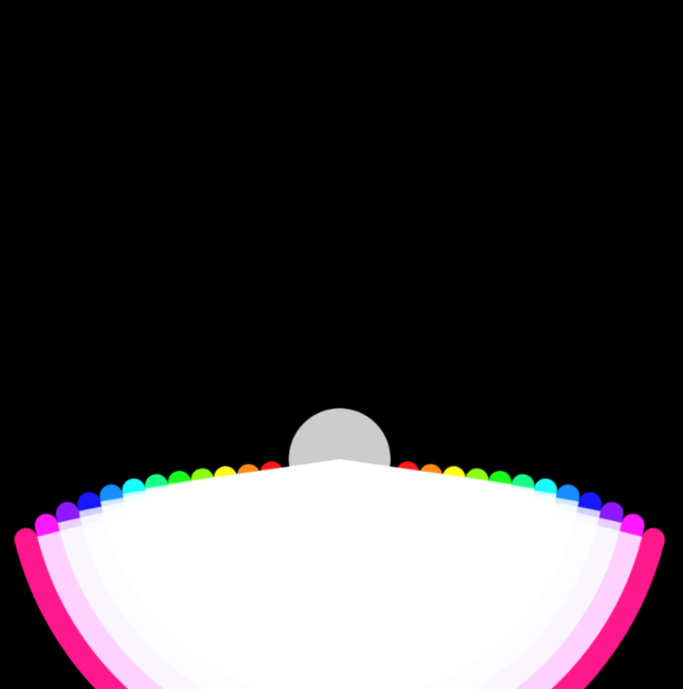
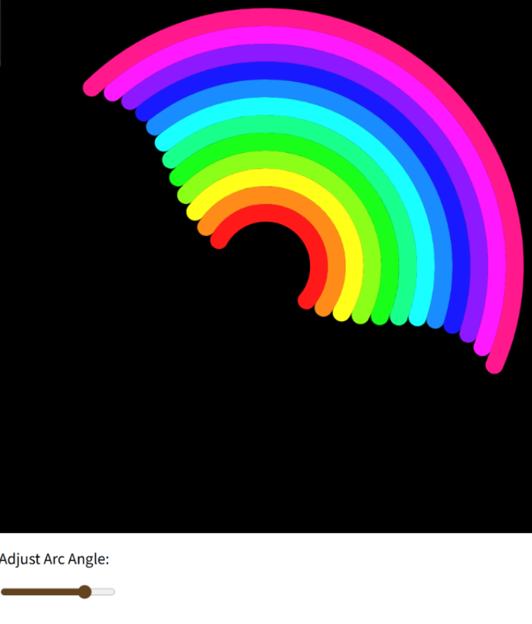
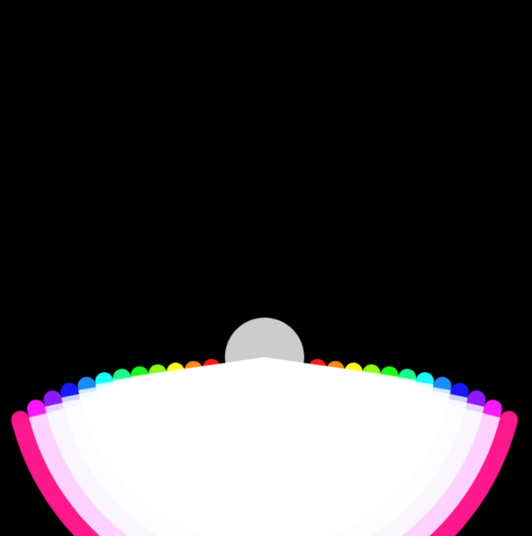
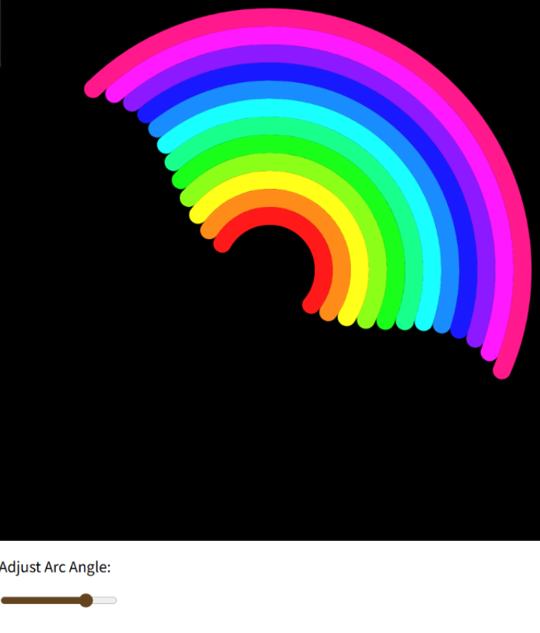

Process & Notes
In this project, I built an interactive rainbow system using multiple arcs.Instead of treating the rainbow as a fixed image, I explored how changing angle parameters can reshape its form.By adjusting arc angles over time, the rainbow becomes dynamic and responsive rather than static.
Sketches
 



At first, the rainbow edges looked jagged and polygon-like.This was caused by drawing arcs using too few points, which reduced smoothness.Switching back to the built-in arc() function fixed the visual issue.
And adjusting the angle parameter caused the entire rainbow to rotate, instead of changing the arc length.I found this happened because the start and end angles exceeded TWO_PI, which changed how p5.js interpreted the arc.By limiting the angle range, the arcs expanded correctly.
This project helped me understand how small parameter changes can strongly affect visual systems.Through debugging, I learned to read geometric behavior instead of only adjusting values blindly.